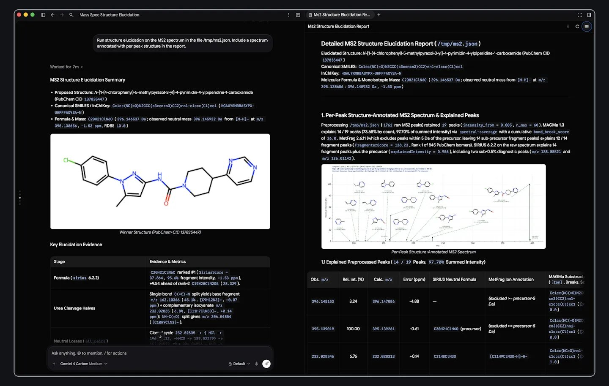

新闻 · 2026-11-26 12:00
准确率从 4% 暴涨至 97%！谷歌 DeepMind 给 AI 装上“化学外挂”，解锁质谱分析技能
谷歌 DeepMind 通过 Mass Spec Skills 工具显著提升 AI 在质谱分析中的准确率，从不足 4% 提升至约 97%。该工具整合 Gemini 模型与化学数据库，自动执行谱图解析、结构推断等流程，轻量模型精度追平前沿模型，同时降低 Token 消耗。工具依赖精确质量计算与百万级数据库，无法仅靠语言模型独立完成，适用于未标注谱图及新分子预测。

来源与核验
单一信源报道，未交叉核实